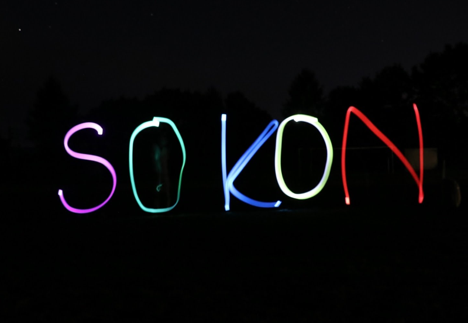
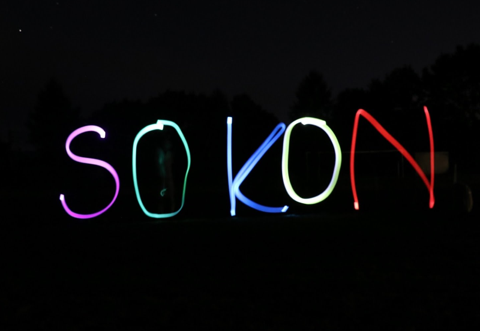

活動
平日は毎日教室を借りて、各自が授業のない時に活動教室として利用しています。
また班員が月1回集まる｢班会｣で進捗報告や知見共有をしています。
他にもサークル外の人も参加可能な講座を不定期で開催しています。
総合コンテンツ制作サークル(総コン)は
明治大学中野キャンパス
を拠点として活動しています。
イラスト班、
音楽班、
ゲーム班
の3つの班に分かれて活動しています。
中野キャンパスで2013年6月に創設し、今年度で9年目になります。
平日は毎日教室を借りて、各自が授業のない時に活動教室として利用しています。
また班員が月1回集まる｢班会｣で進捗報告や知見共有をしています。
他にもサークル外の人も参加可能な講座を不定期で開催しています。

活動教室以外にもSlackというチャットサービスを使ってコミュニケーションを取っています。
イベントの連絡や知見共有の他にも雑談など自由に利用しています。
使用方法は講座を通して丁寧に教わることができます。
毎年10月と3月には全班合同の発表会を開催して、メンバーはそれを目標に作品制作をしています。
 

年2回、夏休みと春休みに開催される合宿ではメンバー同士の交流や観光をしています。
2017年度は夏に秩父、長瀞観光、春に長野でスキーをしました。
和泉キャンパスで毎年開催される明大祭では、班の垣根を越えて準備にあたりブースを出展しています。
2017年度はメンバーが合作したゲームの展示や作品集の頒布、2016年度はDJイベントを企画しました。
コミックマーケット、M3などの頒布イベントへの参加、外部の団体との連携も行っております。
計66名のメンバーが在籍しています。
先端メディアサイエンス学科の学生が多いです。
男女比は8:2と総合数理学部の比率と同じです。
コンパは全て参加任意です。
未成年やお酒の弱い人にお酒を勧めることはありません。